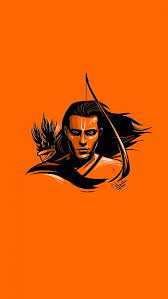
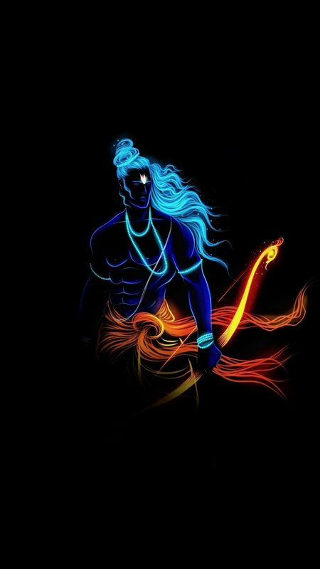

. . . LIFE OF RAM . . .

RAM
Rama was born to Kaushalya and Dasharatha in Ayodhya, the capital of the Kingdom of Kosala. His siblings included Lakshmana, Bharata, and Shatrughna. He married Sita. Though born in a royal family, Rama's life is described in the Hindu texts as one challenged by unexpected changes such as an exile into impoverished and difficult circumstances, ethical questions and moral dilemmas. Of all his travails, the most notable is the kidnapping of Sita by demon-king Ravana, followed by the determined and epic efforts of Rama and Lakshmana to gain her freedom and destroy the evil Ravana against great odds. The entire life story of Rama, Sita and their companions allegorically discusses duties, rights and social responsibilities of an individual. It illustrates dharma and dharmic living through model characters.[6][7]
Rama is especially important to Vaishnavism. He is the central figure of the ancient Hindu epic Ramayana, a text historically popular in the South Asian and Southeast Asian cultures.His ancient legends have attracted bhasya (commentaries) and extensive secondary literature and inspired performance arts. Two such texts, for example, are the Adhyatma Ramayana a spiritual and theological treatise considered foundational by Ramanandi monasteries,and the Ramcharitmanas a popular treatise that inspires thousands of Ramlila festival performances during autumn every year in India.
Rama legends are also found in the texts of Jainism and Buddhism, though he is sometimes called Pauma or Padma in these texts, and their details vary significantly from the Hindu versions. Jain Texts also mentioned Rama as the eighth balabhadra among the 63 salakapurusas. In Sikhism, Rama is mentioned as one of twenty four divine avatars of Vishnu in the Chaubis Avtar in Dasam Granth.
- "Those who have knowledge of dharma say that truth is the highest dharma"
- "There are three all-powerful evils: lust, anger, and greed"
- "Only the timid and the weak leave things to destiny but the strong AND the self-confident never bank on destiny or luck"
- "Just as people are afraid of serpents they are afraid of people who utter lies"

🤍 JAI SREE RAM 🤍